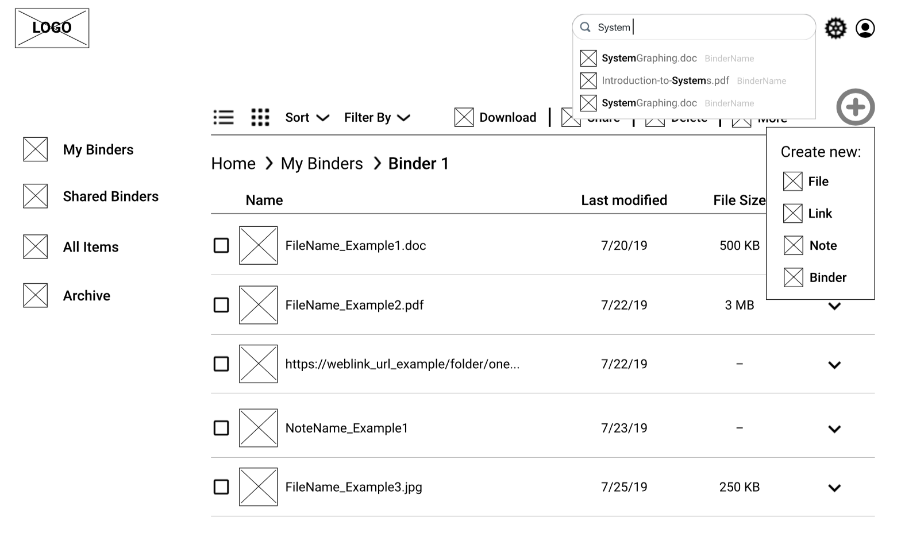

Binder
Your education resources, all in one spot. Save. Share. Collaborate.
My Role
UX Design, Visual Design, Branding & Identity
Tools
Pen/paper, Google Suite, Figma, Adobe Illustrator & Photoshop, Usability Hub
Deliverables
User Surveys, Competitive Analysis, Personas, User Stories and Flows, Wireframes, Branding & Identity, Prototypes, User Testing, Visual Design
Problem
Majority of educators use Google Drive to store and share files with their peers. Though it excels in many aspects, where it falls short for educators were search features, file organization and ability to save and share website links. Alternative methods and/or applications are being used to save and share links.
Solution
Focused on providing an efficient single platform solution, Binder allows educators to share and collaborate on all types of files and resources, including website links that can now be directly loaded. Keywords can be used to tag files, producing more accurate search results.
RESEARCH AND DISCOVERY
User Survey
With the user survey, I wanted to get an insight on how people utilize cloud-base storage services and how it’s meeting their needs. Three main focus were what they use it for, how often they utilize it, and pain points. Since I knew that I wanted to target educators, I created a section within the survey that asked additional questions to those who indicated that profession. Among educators, a common pain point was the lack of ability to load and share web links, like they would share files within folders.
Competitive Analysis
With the knowledge of popular applications and the biggest pain points in mind, I focused my analysis on Google Drive, Pinterest and ShareFile. I wanted to closely look at where each excels and falls short. Through conducting a SWOT analysis and closely examining each service, I was able to uncover where one excels, the others fall short, like saving links and collaboration features. With Google Drive excelling in file storage and sharing for broad range of users, and ShareFile excelling in business solutions, there is a potential for a new competitor that offers the complete collaboration tool that can fit the needs of businesses, but also everyday users.


User Personas
Based on survey results, follow-up interviews and analysis of the competition, created two user personas — A relatively new educator building up her resources, and a veteran educator who is also a leader with the school.
Jackie
- AGE 25
- LOCATION Virginia
- WORK Elementary Teacher
- TIER Work and Personal Files
- New educator gathering inspirations and resources
- Goals
- Save web links in project folders and be able to share them directly like other document files
- Be able to organize files upon uploading, with folder suggestions
- Frustrations
- Reference links are shared a lot, and sometimes I have to make a Google Doc of links just to share more easily.
- At times, I forget to organize files once I upload them and it’s difficult to relocate files
Allison
- AGE 47
- LOCATION Michigan
- WORK High School Teacher
- TIER Work Administration Files
- Veteran resource Creator and Administrator
- Goals
- Organize files using keyword tags to specify a category and/or type of file
- Be able to search and find files quickly and easily
- Have the option to revert back to an archived version
- Frustrations
- Organization options are limited to just folders
- It’s hard to search quickly for a file, even if they are organized in folders
- Auto-save is great, but there are times when I need to go back to a previous version
INFORMATION ARCHITECTURE
User Stories
With these goals and frustrations in mind, created user stories for potential tasks of users.
Narrowed down priorities and determined MVP features.
- File organization (folders, keywords, tagging)
- Intuitive search feature also displaying folder location name
- Ability to save links
- Easy social collaboration environment
| Role | Task | Importance |
|---|---|---|
| As a returning user | I want to sign into my account | High |
| As a returning user | I want to upload a file | High |
| As a returning user | I want to replace a file | High |
| As a returning user | I want to share a file | High |
| As a returning user | I want to save a link to a website | High |
| As a returning user | I want to organize my files using folders and keywords | High |
User Flows & Sitemap
Began sketching out user flows to visualize how users would complete each task. Created many iterations to narrow down a smooth process. User flows were used to create a sitemap that shows how these user flows come together, and establish a hierarchy. With the user flows and sitemaps established, mapped out the content strategy for the application.


Wireframes
Taking the user flows and site maps and translating them into a visual design began with sketching out how that could look like. The first iterations of the dashboard were very rough and one that changed the most throughout the sketching process. Once the dashboard was established, I moved on to the other screens. The main page was another one that went through multiple iterations.
- 
Low-Fidelity Usability Testing
The wireframes were then converted into a clickable prototype and usability testing was conducted to determine the functionality of the navigation and UI elements.
Tasks
- Signing up for an account
- Adding a piece of content
- Organizing a piece of content
Although all of the users successfully completed the tasks presented, there were two areas that required clarification:
- Gray checkbox indicating file selection
- Absence of a column sorting arrow

Takeaway
A big takeaway from this instance was that I cannot assume users would know how to navigate something that is a relatively familiar setup. When presented with a new platform, users tend to approach it with a new perspective.
BRANDING
Research & Sketching
Establishing a name and defining the brand began with looking back at survey results and the target audience. I wanted the brand to convey a message that it’s clean and organized. Through mind mapping, I listed out words related to education and task keywords.
Then I began brainstorming by combining words that convey that message.